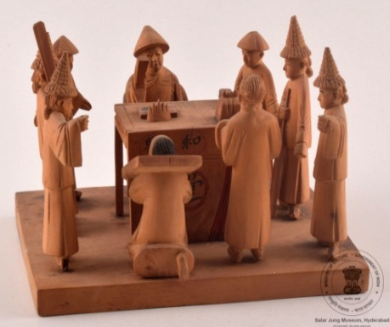

🔇 Is bhasha me is vastu ka audio abhi uplabdh nahi hai.
7. CS - IV - 531: अदालत का दृश्य

7. CS - IV - 531
लकड़ी में उकेरा गया एक अदालत का दृश्य। एक अधिकारी कुर्सी पर बैठा है, सामने एक मेज़ है, उनके दोनों ओर दो सहायक खड़े हैं और चार प्रहरी हैं। अधिकारी के सामने दो आरोपियों को रखा गया है, जिनमें से एक के गले में लकड़ी का तख्ता है और दूसरे के दोनों हाथों में लकड़ी के तख्ते हैं। यह नक्काशी चीन से उत्पन्न हुई थी और यह 20वीं सदी की है। लकड़ी पर उकेरी गई नक्काशी चीनी धार्मिक विश्वास को दर्शाता है। भारतीयों का भी ऐसा ही मानना है कि जो लोग मनुष्यों और जानवरों के साथ भला कार्य करते हैं उन्हें मृत्यु के बाद स्वर्ग में ले जाया जाता है और जो बुरे कर्म करते हैं उन्हें नरक में दंड दिया जाता है। अपराधियों को उनके अलग-अलग पापों के लिए नर्क में अलग-अलग दंड भुगतते हुए दिखाया गया है।
7. CS - IV - 531: Court Scene
7. CS - IV - 531
A court scene carved in wood. An official is seated on a chair with a table before him, two assistants standing on either side of him and four guards. Two accused men are placed before the official, one with a wooden board around his neck and the other with wooden boards on both hands. This carving originated in China and dates to the 20th century. The carving in wood reflects Chinese religious belief. Indians hold a similar belief — that those who do good to human beings and animals are taken to heaven after death, while those who do evil deeds are punished in hell. The offenders are shown suffering different punishments in hell for their different sins.
7. CS - IV - 531: న్యాయస్థాన దృశ్యం
7. CS - IV - 531
కలపలో చెక్కిన ఒక న్యాయస్థాన దృశ్యం. ఒక అధికారి కుర్చీపై కూర్చుని ఉన్నాడు, ముందు ఒక బల్ల ఉంది, ఆయన ఇరువైపులా ఇద్దరు సహాయకులు నిలబడి ఉన్నారు మరియు నలుగురు కాపలాదారులు ఉన్నారు. అధికారి ముందు ఇద్దరు నిందితులను ఉంచారు, వారిలో ఒకరి మెడలో కలప పలక ఉంది, మరొకరి రెండు చేతులకు కలప పలకలు ఉన్నాయి. ఈ చెక్కడం చైనా నుండి వచ్చినది, 20వ శతాబ్దానికి చెందినది. కలపపై చెక్కిన ఈ శిల్పం చైనీస్ మతపరమైన విశ్వాసాన్ని ప్రతిబింబిస్తుంది. భారతీయులు కూడా ఇలాగే నమ్ముతారు — మనుషులకు, జంతువులకు మేలు చేసేవారిని మరణానంతరం స్వర్గానికి తీసుకువెళతారని, చెడు పనులు చేసేవారిని నరకంలో శిక్షిస్తారని. నేరస్తులను వారి వేర్వేరు పాపాలకు నరకంలో వేర్వేరు శిక్షలు అనుభవిస్తున్నట్లు చూపారు.
7. سی ایسIV-531: عدالت کامنظر
7. سی ایسIV-531
یہ ایک کھڑی ہوئی جاپانی خاتونمایکوکا مجسمہ ہے جو دونوں ہاتھوں میں چھتری تھامے ہوئی ہے۔ اس کے سینے پر گلابی رنگ کے موتیوں کی مالا ہے جو بیلٹ کی مانند دکھائی دیتی ہے۔ مایکو نے پھولوں کے نقش و نگار والا لباس پہنا ہوا ہے اور سر پر پھول لٹک رہے ہیں۔مائیکو دراصل کیوٹو میں گیشا بننے والی طالبہ لڑکیوں کو کہا جاتا ہے۔ انہیں جاپانی رقص سیکھنا ضروری ہوتا ہے، اسی وجہ سے انہیں مایکو کہا جاتا ہے۔مائی کا مطلب رقص اور کو کا مطلب لڑکی ہے۔گیوشا کے گڑیا نما مجسمے جاپان کی خوبصورت خواتین کی نمائندگی کرتے ہیں، جو رقص گائیکیگفتگو اور دیگر صلاحیتوں کے ذریعے تفریح فراہم کرتی ہیں۔ ہر جاپانی گیوشا گڑیا کا لباس ریشم سے نہایت باریک کاریگری کے ساتھ تیار کیا جاتا ہے اور یہ حقیقی جاپانی گیوشا کے کیمونو جیسا دکھائی دیتا ہے۔تمام جاپانی گیوشا گڑیا سیاہ لکڑی کے چبوترے پر نصب کیے گئے ہیں تاکہ اعلیٰ معیار کی خوبصورتی سامنے آئے۔یہ گڑیا جاپانی حکومت کی جانب سے سالار جنگ میوزیم کو مارچ 1966 میں تحفے میں دیے گئے تھے۔
2. سی ایس-I-303: چوہا پرسوار گنیش جی
یہ بھگوان گنیش کا چینی مٹی سے تیار کیا گیا مجسمہ ہے، جو چار ہاتھوں والا ہے ۔ اس کا اوپری لباس سرخ رنگ کا ہے۔یہ مجسمہ ہندوستان میں تیار کیا گیا اور بیسویں صدی سے تعلق رکھتا ہے۔گنیشجی کو عام طور پر چوہے پر سوار دکھایا جاتا ہے، جو ان کی سواری ہے۔ چوہابےچینذہن خواہشات اور پیچیدہ حالات میں قابو پانے کی صلاحیت کی علامت ہے۔ گنیش جی کا چوہے پر سوار ہونا یہ ظاہر کرتا ہے کہ وہ منفی توانائی کو مثبت میں تبدیل کرنے کی صلاحیت رکھتے ہیں۔گنیشجی ہندو مذہب میں ہاتھی سر والے دیوتا ہیں۔ وہ بھگوان شیو اور دیوی پاروتی کے بیٹے ہیں۔گنیش جیہندو مذہب کے نہایت مقبول اور کثرت سے پوجے جانے والے دیوتاؤں میں شمار ہوتے ہیں۔ ہندو روایت کے مطابق گنیش کو دانائی دولت کامیابی اور خوش بختی کا دیوتا مانا جاتا ہے۔
3. سی ایس-I-305: پدمسمبھوا
یہ تاج پہنی ہوئی دیوی پدمسمبھوا کا رنگین چینی مٹی سے بنا ہوا مجسمہ ہے، جو کمل کے پھول پر بیٹھی ہوئی ہیں اور ان کے دس بازو ہیں۔ یہ پیکر ڈھال کر تیار کیا گیا ہے جس میں دس ہاتھ مختلف علامتی اشیا تھامے ہوئے دکھائے گئے ہیں۔ انہوں نے شوخ رنگوں کے آرام دہ اور دلکش لباس زیب تن کی ہوئی ہیں، اور یہ مجسمہ لہروں کے اوپر بنائے گئے کمل نما چبوترے پر نصب ہے۔ یہ بدھ مت کے تانترک مکتبفکر کی ایک نمایاں اور باوقار شخصیت سمجھی جاتی ہیں، جو اپنی روحانی مہارت اور تانترک عبادات و رسوم کے باعث شہرت رکھتے ہیں۔ تبتی بدھ مت میں انہیں نہایت عقیدت کے ساتھ یاد کیا جاتا ہے اور اکثر تبت میں بدھ مت کی بنیاد رکھنے والی عظیم شخصیات میں شمار کی جاتی ہیں ۔ کہا جاتا ہے کہ یہ کمل کے پھول سے پیدا ہوئی، جو بدھ مت کے فن و ادب میں ایک معروف اور مقدس علامت ہے۔ تبت کی ثقافت میں ان کی حیثیت مرکزی ہے اور انہیں مجسموں مصوری اور فنون لطیفہ کی دیگر صورتوں میں کثرت سے پیش کیا جاتا ہے
4سی ایس-I-812: بونا کا مجسمہ
یہ مجسمہ سات بونوں میں سے ایک کردار ڈاک کا ہے جو درخت کے تنے پر بیٹھا ہوا ہے۔ اس کا بایاں ہاتھ کمر پر ہے۔ اس نے سبز رنگ کی ٹوپیسفید قمیص اور سیاہ جوتے پہن رکھے ہیں۔ کمر پر سیاہ بیلٹ ہے ۔ سات بونے ڈزنی کی مشہور متحرک فلم “اسنو وائٹ اینڈ دی سیون ڈوارفس” کے کردار ہیں۔ ان کے نام یہ ہیں ڈاک گرَمپیبےشفول ، سلیپی، اسنیزی، ہیپی اور ڈوپی ۔ ہر ایک کی شخصیت منفرد ہے۔ یہ سب ایک چھوٹے سے کاٹیج میں رہتے ہیں اور ہیروں کی کان میں کام کرتے ہیں۔ وہ اپنی مہربانی اور اسنو وائٹ کو اپنے گھر میں خوش آمدید کہنے کے لیے جانے جاتے ہیں۔ ڈاک اس گروہ کا رہنما ہے اور ذہین و دانا سمجھا جاتا ہے۔ گرَمپی سب سے زیادہ چڑچڑا ہے۔ بیشفل نہایت شرمیلا اور قدرے رومانوی مزاج رکھتا ہے۔ سلیپی ہمیشہ تھکا ہوا محسوس ہوتا ہے۔ سنیزی کا نام اس کی عادت کی طرف اشارہ کرتا ہے۔ ہیپی سب سے زیادہ خوش مزاج اور ہنس مکھ ہے۔ ڈوپی سب سے کم عمر بھولا بھالا گونگا اور بغیر داڑھی کے دکھایا جاتا ہے۔ یہ مجسمہ جرمنی سے تعلق رکھتا ہے اور بیسویں صدی کا ہے۔
5. سی ایس-II-656: کشتی
سنہری ملمع کاری سے مزین جنگی جہاز کا ایک چھوٹا ماڈل، جس میں تین ستون دو سپاہی پانچ توپیں اور چار رڈر موجود ہیں۔ دوسری جانب تین نقاب نما شکلیں بنی ہوئی ہیں۔ ایک سرے پر جھنڈےاور علامتی پرچم نصب ہیں، جبکہ چار تمغہ نما دائروں میں چینی تحریر ہیں۔ یہ جہاز خوب صورت نقش و نگار سے آراستہ لکڑی کے تراشیدہ چبوترے پر نصب ہے۔ اس طرز کے جنگی جہاز چینی روایتی بادبانی کشتیوں کی ایک قسم سے تعلق رکھتے ہیں۔ ان کی نمایاں خصوصیات میں ہموار اور چپٹی تہہ درمیانی مرکزی رڈر اور عموماً سیدھا پچھلا حصہ شامل ہے۔ یہ جہاز عموماً سامان کی نقل و حمل تفریحی سفر اور دریاؤں یا ساحلی علاقوں میں رہائشی کشتیوں کے طور پر بھی استعمال ہوتے رہے ہیں۔ انہیں خاص طور پر دریائی سفر بین الاقوامی تجارت سمندری مہمات اور یہاں تک کہ بحری جنگوں کے لیے بھی تیار کیا جاتا تھا۔ آج بھی ایشیا کے مختلف علاقوں میں اس طرز کی کشتیاں ماہی گیری تجارت اور سیاحت کے لیے استعمال کی جاتی ہیں۔ یہ مختصر جنگی جہاز چاندی سے تیار کیا گیا ہے۔ یہ چینی طرز کا ماڈل جنگی جہاز بیسویں صدی سے تعلق رکھتا ہے۔
6. سی ایس-IV-346: مختصر ساز
یہ ساز کا ایک مختصر نمونہ ہے جس میں چھ تاریں لگی ہوئی ہیں۔ ساز کیباڈی کے کناروں پر ہاتھی دانت کی تزئین کی گئی ہے ، اور سامنے کی چھڑی کے اوپر ہاتھی دانت کا پرندہ نصب ہے جبکہ پیچھے پر ہاتھی دانت سے تراشا گیا پرندے کا سر موجود ہے۔سازکیباڈیگہرے زرد مائل اور سرخی مائل بھورے رنگ کے مڑھے ہوئے پلاسٹک شیٹ سے ڈھکا ہوا ہے۔ یہ آلہ صوتی تاروں سے آواز پیدا کرتا ہے، جو عموماً نائلوناسٹیل یا کبھی کبھار آنتوں کے بنے ہوتے ہیں۔ عموماً تاروں کو انگلیوں سے چھیڑ کر بجایا جاتا ہے، جبکہ بعض اوقات کمان کے ذریعے بھی ان پر حرکت دی جاتی ہے۔ موسیقار اپنی مہارت کے مطابق مختلف انداز اختیار کرتے ہیں۔ یہ مختصر ساز ہاتھی دانت اور لکڑی سے تیار کیا گیا ہے۔ اس کا تعلق یورپ سے ہے اور یہ بیسویں صدی کا ہے۔
7. سی ایس-IV-531: عدالتی منظر
یہ لکڑی پر تراشا گیا ایک عدالت کا منظر ہے۔ ایک افسر کرسی پر بیٹھا ہے اور اس کے سامنے میز رکھی ہے۔ اس کے دونوں جانب ایک ایک ماتحت موجود ہے، جبکہ چار محافظ پہرہ دے رہے ہیں۔ افسر کے سامنے دو ملزمان کھڑے ہیں؛ ایک کے گردن میں لکڑی کا طوق ڈالا گیا ہے اور دوسرے کے دونوں ہاتھوں میں لکڑی کی بیڑیاں ہیں۔ اس کی ابتدا چین سے ہوئی اور یہ بیسویں صدی سے تعلق رکھتا ہے۔ لکڑی پر کی گئی نقش و نگاری کا ایک مجموعہ چینی مذہبی عقائد کی عکاسی کرتا ہے۔ ہندوستانی عقیدے کے مطابق بھی جو لوگ انسانوں اور جانوروں کے ساتھ نیکی کرتے ہیں، انہیں مرنے کے بعد جنت نصیب ہوتی ہے، اور جو برے اعمال کرتے ہیں انہیں جہنم میں سزا دی جاتی ہے۔ مجرموں کو ان کے مختلف گناہوں کے مطابق جہنم میں طرح طرح کی سزائیں بھگتتے ہوئے دکھایا گیا ہے۔
2. سی ایس-I-303: چوہا پرسوار گنیش جی
یہ بھگوان گنیش کا چینی مٹی سے تیار کیا گیا مجسمہ ہے، جو چار ہاتھوں والا ہے ۔ اس کا اوپری لباس سرخ رنگ کا ہے۔یہ مجسمہ ہندوستان میں تیار کیا گیا اور بیسویں صدی سے تعلق رکھتا ہے۔گنیشجی کو عام طور پر چوہے پر سوار دکھایا جاتا ہے، جو ان کی سواری ہے۔ چوہابےچینذہن خواہشات اور پیچیدہ حالات میں قابو پانے کی صلاحیت کی علامت ہے۔ گنیش جی کا چوہے پر سوار ہونا یہ ظاہر کرتا ہے کہ وہ منفی توانائی کو مثبت میں تبدیل کرنے کی صلاحیت رکھتے ہیں۔گنیشجی ہندو مذہب میں ہاتھی سر والے دیوتا ہیں۔ وہ بھگوان شیو اور دیوی پاروتی کے بیٹے ہیں۔گنیش جیہندو مذہب کے نہایت مقبول اور کثرت سے پوجے جانے والے دیوتاؤں میں شمار ہوتے ہیں۔ ہندو روایت کے مطابق گنیش کو دانائی دولت کامیابی اور خوش بختی کا دیوتا مانا جاتا ہے۔
3. سی ایس-I-305: پدمسمبھوا
یہ تاج پہنی ہوئی دیوی پدمسمبھوا کا رنگین چینی مٹی سے بنا ہوا مجسمہ ہے، جو کمل کے پھول پر بیٹھی ہوئی ہیں اور ان کے دس بازو ہیں۔ یہ پیکر ڈھال کر تیار کیا گیا ہے جس میں دس ہاتھ مختلف علامتی اشیا تھامے ہوئے دکھائے گئے ہیں۔ انہوں نے شوخ رنگوں کے آرام دہ اور دلکش لباس زیب تن کی ہوئی ہیں، اور یہ مجسمہ لہروں کے اوپر بنائے گئے کمل نما چبوترے پر نصب ہے۔ یہ بدھ مت کے تانترک مکتبفکر کی ایک نمایاں اور باوقار شخصیت سمجھی جاتی ہیں، جو اپنی روحانی مہارت اور تانترک عبادات و رسوم کے باعث شہرت رکھتے ہیں۔ تبتی بدھ مت میں انہیں نہایت عقیدت کے ساتھ یاد کیا جاتا ہے اور اکثر تبت میں بدھ مت کی بنیاد رکھنے والی عظیم شخصیات میں شمار کی جاتی ہیں ۔ کہا جاتا ہے کہ یہ کمل کے پھول سے پیدا ہوئی، جو بدھ مت کے فن و ادب میں ایک معروف اور مقدس علامت ہے۔ تبت کی ثقافت میں ان کی حیثیت مرکزی ہے اور انہیں مجسموں مصوری اور فنون لطیفہ کی دیگر صورتوں میں کثرت سے پیش کیا جاتا ہے
4سی ایس-I-812: بونا کا مجسمہ
یہ مجسمہ سات بونوں میں سے ایک کردار ڈاک کا ہے جو درخت کے تنے پر بیٹھا ہوا ہے۔ اس کا بایاں ہاتھ کمر پر ہے۔ اس نے سبز رنگ کی ٹوپیسفید قمیص اور سیاہ جوتے پہن رکھے ہیں۔ کمر پر سیاہ بیلٹ ہے ۔ سات بونے ڈزنی کی مشہور متحرک فلم “اسنو وائٹ اینڈ دی سیون ڈوارفس” کے کردار ہیں۔ ان کے نام یہ ہیں ڈاک گرَمپیبےشفول ، سلیپی، اسنیزی، ہیپی اور ڈوپی ۔ ہر ایک کی شخصیت منفرد ہے۔ یہ سب ایک چھوٹے سے کاٹیج میں رہتے ہیں اور ہیروں کی کان میں کام کرتے ہیں۔ وہ اپنی مہربانی اور اسنو وائٹ کو اپنے گھر میں خوش آمدید کہنے کے لیے جانے جاتے ہیں۔ ڈاک اس گروہ کا رہنما ہے اور ذہین و دانا سمجھا جاتا ہے۔ گرَمپی سب سے زیادہ چڑچڑا ہے۔ بیشفل نہایت شرمیلا اور قدرے رومانوی مزاج رکھتا ہے۔ سلیپی ہمیشہ تھکا ہوا محسوس ہوتا ہے۔ سنیزی کا نام اس کی عادت کی طرف اشارہ کرتا ہے۔ ہیپی سب سے زیادہ خوش مزاج اور ہنس مکھ ہے۔ ڈوپی سب سے کم عمر بھولا بھالا گونگا اور بغیر داڑھی کے دکھایا جاتا ہے۔ یہ مجسمہ جرمنی سے تعلق رکھتا ہے اور بیسویں صدی کا ہے۔
5. سی ایس-II-656: کشتی
سنہری ملمع کاری سے مزین جنگی جہاز کا ایک چھوٹا ماڈل، جس میں تین ستون دو سپاہی پانچ توپیں اور چار رڈر موجود ہیں۔ دوسری جانب تین نقاب نما شکلیں بنی ہوئی ہیں۔ ایک سرے پر جھنڈےاور علامتی پرچم نصب ہیں، جبکہ چار تمغہ نما دائروں میں چینی تحریر ہیں۔ یہ جہاز خوب صورت نقش و نگار سے آراستہ لکڑی کے تراشیدہ چبوترے پر نصب ہے۔ اس طرز کے جنگی جہاز چینی روایتی بادبانی کشتیوں کی ایک قسم سے تعلق رکھتے ہیں۔ ان کی نمایاں خصوصیات میں ہموار اور چپٹی تہہ درمیانی مرکزی رڈر اور عموماً سیدھا پچھلا حصہ شامل ہے۔ یہ جہاز عموماً سامان کی نقل و حمل تفریحی سفر اور دریاؤں یا ساحلی علاقوں میں رہائشی کشتیوں کے طور پر بھی استعمال ہوتے رہے ہیں۔ انہیں خاص طور پر دریائی سفر بین الاقوامی تجارت سمندری مہمات اور یہاں تک کہ بحری جنگوں کے لیے بھی تیار کیا جاتا تھا۔ آج بھی ایشیا کے مختلف علاقوں میں اس طرز کی کشتیاں ماہی گیری تجارت اور سیاحت کے لیے استعمال کی جاتی ہیں۔ یہ مختصر جنگی جہاز چاندی سے تیار کیا گیا ہے۔ یہ چینی طرز کا ماڈل جنگی جہاز بیسویں صدی سے تعلق رکھتا ہے۔
6. سی ایس-IV-346: مختصر ساز
یہ ساز کا ایک مختصر نمونہ ہے جس میں چھ تاریں لگی ہوئی ہیں۔ ساز کیباڈی کے کناروں پر ہاتھی دانت کی تزئین کی گئی ہے ، اور سامنے کی چھڑی کے اوپر ہاتھی دانت کا پرندہ نصب ہے جبکہ پیچھے پر ہاتھی دانت سے تراشا گیا پرندے کا سر موجود ہے۔سازکیباڈیگہرے زرد مائل اور سرخی مائل بھورے رنگ کے مڑھے ہوئے پلاسٹک شیٹ سے ڈھکا ہوا ہے۔ یہ آلہ صوتی تاروں سے آواز پیدا کرتا ہے، جو عموماً نائلوناسٹیل یا کبھی کبھار آنتوں کے بنے ہوتے ہیں۔ عموماً تاروں کو انگلیوں سے چھیڑ کر بجایا جاتا ہے، جبکہ بعض اوقات کمان کے ذریعے بھی ان پر حرکت دی جاتی ہے۔ موسیقار اپنی مہارت کے مطابق مختلف انداز اختیار کرتے ہیں۔ یہ مختصر ساز ہاتھی دانت اور لکڑی سے تیار کیا گیا ہے۔ اس کا تعلق یورپ سے ہے اور یہ بیسویں صدی کا ہے۔
7. سی ایس-IV-531: عدالتی منظر
یہ لکڑی پر تراشا گیا ایک عدالت کا منظر ہے۔ ایک افسر کرسی پر بیٹھا ہے اور اس کے سامنے میز رکھی ہے۔ اس کے دونوں جانب ایک ایک ماتحت موجود ہے، جبکہ چار محافظ پہرہ دے رہے ہیں۔ افسر کے سامنے دو ملزمان کھڑے ہیں؛ ایک کے گردن میں لکڑی کا طوق ڈالا گیا ہے اور دوسرے کے دونوں ہاتھوں میں لکڑی کی بیڑیاں ہیں۔ اس کی ابتدا چین سے ہوئی اور یہ بیسویں صدی سے تعلق رکھتا ہے۔ لکڑی پر کی گئی نقش و نگاری کا ایک مجموعہ چینی مذہبی عقائد کی عکاسی کرتا ہے۔ ہندوستانی عقیدے کے مطابق بھی جو لوگ انسانوں اور جانوروں کے ساتھ نیکی کرتے ہیں، انہیں مرنے کے بعد جنت نصیب ہوتی ہے، اور جو برے اعمال کرتے ہیں انہیں جہنم میں سزا دی جاتی ہے۔ مجرموں کو ان کے مختلف گناہوں کے مطابق جہنم میں طرح طرح کی سزائیں بھگتتے ہوئے دکھایا گیا ہے۔
7. CS - IV - 531: রাজসভার দৃশ্য
7. CS - IV - 531
কাঠের ওপর খোদাই করা একটি রাজসভার দৃশ্য। এখানে একজন বিচারক সামনে টেবিল নিয়ে একটি চেয়ারে বসে আছেন; তাঁর দুই পাশে দুইজন অধস্তন কর্মী এবং চারজন প্রহরী দাঁড়িয়ে রয়েছেন। বিচারকের সামনে দুইজন অভিযুক্ত ব্যক্তি উপস্থিত, যাদের মধ্যে একজনের ঘাড় কাঠের ব্লকে আটকানো এবং অন্যজনের দুই হাত কাঠের শিকল বা ব্লকে বাঁধা। ২০শ শতাব্দীতে চীনে তৈরি এই কাঠের খোদাই করা শিল্পকর্মটি মূলত চীনাদের ধর্মীয় বিশ্বাসকে ফুটিয়ে তোলে। ভারতীয়দের মতোই তারাও বিশ্বাস করে যে, যারা পশু বা মানুষের প্রতি দয়া প্রদর্শন করে, তারা মৃত্যুর পর স্বর্গে স্থান পায় এবং যারা কুকর্ম করে তারা নরকে শাস্তি ভোগ করে। এখানে নরকের সেই অপরাধীদের তাদের বিবিধ পাপের জন্য বিভিন্ন ধরণের শাস্তি পাওয়ার দৃশ্য চিত্রিত করা হয়েছে।
7. સીએસ-IV-531: અદાલતનું દૃશ્ય
7. સીએસ-IV-531
છ હારવાળું હાર્પનું સૂક્ષ્મ મોડેલ. શરીરના કિનારા હાથીદાંતથી બનાવેલા છે, આગળના દંડના ટોચ પર હાથીદાંતથી બનેલો પક્ષી છે અને પાછળની બાજુએ કોતરાયેલું પક્ષીના મસ્તકનું આકાર છે. હાર્પનું શરીર ઓકર અને બર્ન્ટ સિયેના રંગની ઢાળવાળી પ્લાસ્ટિક શીટથી આવરાયેલું છે. આ વાદ્યમાં ધ્વનિ ઉત્પન્ન કરનાર ભાગ એટલે તાર, જે નાઇલોન, સ્ટીલ અથવા ક્યારેક આંતરડાના તંતુઓથી બનેલા હોય છે. તારોને સામાન્ય રીતે ધનુષ (બો) ફેરવી વગાડવામાં આવે છે. સંગીતકાર પોતાની આંગળીઓથી તારો ઝણકાવે છે અને ક્યારેક ધનુષને ઊંધું ફેરવી તેની લાકડાની હાથિયાળી સાથે, જે પાછળના ભાગે પક્ષીના મસ્તકના આકારમાં કોતરાયેલ છે, તારો વગાડે છે. તારોને મોટાભાગે ધનુષ ફેરવી વગાડવામાં આવે છે. આ નાનું હાર્પનું મોડેલ હાથીદાંત અને લાકડાથી બનાવવામાં આવ્યું છે. આ સૂક્ષ્મ હાર્પ યુરોપનું છે અને 20મી સદીના સમયકાળનું છે.
7. સીએસ-IV-531: અદાલતનું દૃશ્ય
લાકડામાં કોતરાયેલ અદાલતનું દૃશ્ય. એક અધિકારી ખુરશી પર બેઠેલો છે, તેના સામે ટેબલ છે. તેની બન્ને બાજુએ બે સહાયક છે અને ચાર રક્ષક ઉભા છે. અધિકારીના સામે બે આરોપી ઊભા છે — એકના ગળામાં લાકડાનો ખૂંટો છે અને બીજા વ્યક્તિના બંને હાથમાં લાકડાનો ખૂંટો બંધાયેલો છે. આ કોતરણી ચીનમાંથી ઉત્પન્ન થયેલી છે અને 20મી સદીના સમયકાળની છે. લાકડાની આ કોતરણી ચીનની ધાર્મિક માન્યતાઓને દર્શાવે છે. ભારતીયોમાં પણ સમાન માન્યતા છે કે જે લોકો પ્રાણીઓ અને માનવો માટે સારા કાર્ય કરે છે તેઓને સ્વર્ગ પ્રાપ્ત થાય છે, જ્યારે દુષ્કર્મ કરનારા લોકોને મૃત્યુ પછી નરકમાં દંડ મળે છે. આ કોતરણીમાં દોષિતોને તેમના વિવિધ પાપો માટે નરકમાં અલગ અલગ શાસ્તિઓ ભોગવતા દર્શાવવામાં આવ્યા છે.
8. 3-71: લાફિંગ બુદ્ધની પ્રતિમા
રંગીન પોર્સેલિનથી બનેલી વિન્ટેજ પ્રતિમા — બેઠેલા વિશાળ હસતા બુદ્ધની, જેના હાથ, ખભા અને ગોદમાં પાંચ બાળકો બેઠેલા છે, અને પ્રતિમા વિવિધ રંગોથી રંગાયેલી છે. પાંચ બાળકો સાથેના આ ચમકદાર અને બહુવર્ણીય હસતા બુદ્ધના આકારમાં સમૃદ્ધિ, સદભાગ્ય અને સુખી કુટુંબજીવનનું પ્રતિક અનુભવો. મણકા ધારણ કરનાર આ સત્તાવાન પ્રતિક દ્વારા સૌથી હઠીલા બાળકોને પણ માર્ગદર્શન અને શાંતિ મળે છે. આ પ્રતિમા ચીનમાં ઉત્પન્ન થયેલી છે અને 19મી સદીની છે. હસતા બુદ્ધને બૌદ્ધ અને દાવવાદ (તાઓવાદ) બંને પરંપરાઓમાં સુખ અને સદભાગ્યના પ્રતિક તરીકે માનવામાં આવે છે. તેમને મોટું, ફૂલેલું પેટ અને હસતો ચહેરો ધરાવતા રૂપમાં દર્શાવવામાં આવે છે.
7. સીએસ-IV-531: અદાલતનું દૃશ્ય
લાકડામાં કોતરાયેલ અદાલતનું દૃશ્ય. એક અધિકારી ખુરશી પર બેઠેલો છે, તેના સામે ટેબલ છે. તેની બન્ને બાજુએ બે સહાયક છે અને ચાર રક્ષક ઉભા છે. અધિકારીના સામે બે આરોપી ઊભા છે — એકના ગળામાં લાકડાનો ખૂંટો છે અને બીજા વ્યક્તિના બંને હાથમાં લાકડાનો ખૂંટો બંધાયેલો છે. આ કોતરણી ચીનમાંથી ઉત્પન્ન થયેલી છે અને 20મી સદીના સમયકાળની છે. લાકડાની આ કોતરણી ચીનની ધાર્મિક માન્યતાઓને દર્શાવે છે. ભારતીયોમાં પણ સમાન માન્યતા છે કે જે લોકો પ્રાણીઓ અને માનવો માટે સારા કાર્ય કરે છે તેઓને સ્વર્ગ પ્રાપ્ત થાય છે, જ્યારે દુષ્કર્મ કરનારા લોકોને મૃત્યુ પછી નરકમાં દંડ મળે છે. આ કોતરણીમાં દોષિતોને તેમના વિવિધ પાપો માટે નરકમાં અલગ અલગ શાસ્તિઓ ભોગવતા દર્શાવવામાં આવ્યા છે.
8. 3-71: લાફિંગ બુદ્ધની પ્રતિમા
રંગીન પોર્સેલિનથી બનેલી વિન્ટેજ પ્રતિમા — બેઠેલા વિશાળ હસતા બુદ્ધની, જેના હાથ, ખભા અને ગોદમાં પાંચ બાળકો બેઠેલા છે, અને પ્રતિમા વિવિધ રંગોથી રંગાયેલી છે. પાંચ બાળકો સાથેના આ ચમકદાર અને બહુવર્ણીય હસતા બુદ્ધના આકારમાં સમૃદ્ધિ, સદભાગ્ય અને સુખી કુટુંબજીવનનું પ્રતિક અનુભવો. મણકા ધારણ કરનાર આ સત્તાવાન પ્રતિક દ્વારા સૌથી હઠીલા બાળકોને પણ માર્ગદર્શન અને શાંતિ મળે છે. આ પ્રતિમા ચીનમાં ઉત્પન્ન થયેલી છે અને 19મી સદીની છે. હસતા બુદ્ધને બૌદ્ધ અને દાવવાદ (તાઓવાદ) બંને પરંપરાઓમાં સુખ અને સદભાગ્યના પ્રતિક તરીકે માનવામાં આવે છે. તેમને મોટું, ફૂલેલું પેટ અને હસતો ચહેરો ધરાવતા રૂપમાં દર્શાવવામાં આવે છે.
7. CS-IV-531: ಕೋರ್ಟ್ ಸೀನ್
7. CS-IV-531
ಆರು ತಂತಿಗಳನ್ನು ಹೊಂದಿರುವ 'ಹಾರ್ಪ್' ವಾದ್ಯದ ಸುಂದರವಾದ ಚಿಕಣಿ ಮಾದರಿಯಕಲಾಕೃತಿ ಇದಾಗಿದೆ. ಇದರ ಮುಖ್ಯಭಾಗದ ಅಂಚುಗಳನ್ನು ದಂತದಿಂದ ಮಾಡಲಾಗಿದ್ದು, ಮುಂದಿನ ಸರಳಿನ ಮೇಲ್ಭಾಗದಲ್ಲಿ ದಂತದ ಪಕ್ಷಿಯಿದೆ ಮತ್ತು ಹಿಂಭಾಗದಲ್ಲಿ ದಂತದಿಂದ ಕೆತ್ತಲಾದ ಪಕ್ಷಿಯ ತಲೆಯಿದೆ. ಇದರ ಒಡಲನ್ನು ಕಾವಿ ಮತ್ತು ಕಡು ಕಂದು ಬಣ್ಣದ ಅಚ್ಚೊತ್ತಿದ ಪ್ಲಾಸ್ಟಿಕ್ ಹಾಳೆಯಿಂದ ಮುಚ್ಚಲಾಗಿದೆ.ಈ ವಾದ್ಯದಿಂದ ಮಧುರವಾದ ಧ್ವನಿಯನ್ನು ಹೊರಡಿಸುವ ಇದರ ತಂತಿಗಳನ್ನು; ನೈಲಾನ್, ಉಕ್ಕು ಅಥವಾ ಕೆಲವೊಮ್ಮೆ ಪ್ರಾಣಿಗಳ ಕರುಳಿನಿಂದ ತಯಾರಿಸಲಾಗುತ್ತದೆ. ಈ ತಂತಿಗಳ ಮೇಲೆ ಬಿಲ್ಲನ್ನುಎಳೆಯುವ ಮೂಲಕ ಹೆಚ್ಚಾಗಿ ಇದನ್ನು ನುಡಿಸಲಾಗುತ್ತದೆ. ಸಂಗೀತಗಾರರು ತಮ್ಮ ಬೆರಳುಗಳನ್ನು ಬಳಸಿ ತಂತಿಗಳನ್ನು ಮೀಟುತ್ತಾರೆ, ಮತ್ತು ಕೆಲವೊಮ್ಮೆ ಬಿಲ್ಲನ್ನು ತಲೆಕೆಳಗಾಗಿ ತಿರುಗಿಸಿ, ಹಿಂಭಾಗದಲ್ಲಿ ಕೆತ್ತಲಾದ ಪಕ್ಷಿಯ ತಲೆಯಿರುವ ಮರದ ಹಿಡಿಕೆಯಿಂದಲೂ ತಂತಿಗಳನ್ನು ನುಡಿಸುತ್ತಾರೆ.ಆನೆದಂತ ಮತ್ತು ಮರದಿಂದ ಮಾಡಲಾದ, ಯುರೋಪ್ ಖಂಡಕ್ಕೆ ಸೇರಿದ ಹಾರ್ಪ್ ವಾದ್ಯದ ಈ ಅದ್ಭುತ ಚಿಕಣಿ ಕಲಾಕೃತಿಯು 20ನೇ ಶತಮಾನದಷ್ಟು ಹಳೆಯದಾಗಿದೆ.
7. CS-IV-531: ಕೋರ್ಟ್ ಸೀನ್
ಮರದಲ್ಲಿ ಕೆತ್ತಲಾದ ನ್ಯಾಯಾಲಯದ ದೃಶ್ಯವನ್ನು ಬಿಂಬಿಸುವ ಅತ್ಯದ್ಭುತ ಶಿಲ್ಪ ಕಲಾಕೃತಿ ಇದಾಗಿದೆ. ಇಲ್ಲಿ ಒಬ್ಬ ಅಧಿಕಾರಿಯು ಕುರ್ಚಿಯ ಮೇಲೆ ಆಸೀನರಾಗಿದ್ದು, ಅವರ ಮುಂದೊಂದು ಮೇಜಿದೆ. ಆ ಅಧಿಕಾರಿಯ ಎರಡೂ ಬದಿಗಳಲ್ಲಿ ತಲಾ ಒಬ್ಬರಂತೆ ಇಬ್ಬರು ಅಧೀನ ಅಧಿಕಾರಿಗಳು ಮತ್ತು ನಾಲ್ವರು ಕಾವಲುಗಾರರಿದ್ದಾರೆ.ಅಧಿಕಾರಿಯ ಮುಂದೆ ಇಬ್ಬರು ಆರೋಪಿಗಳನ್ನು ನಿಲ್ಲಿಸಲಾಗಿದೆ. ಅವರಲ್ಲಿ ಒಬ್ಬನ ಕುತ್ತಿಗೆಗೆ ಮರದ ತುಂಡನ್ನು ಸಿಲುಕಿಸಲಾಗಿದ್ದರೆ, ಮತ್ತೊಬ್ಬನ ಎರಡೂ ಕೈಗಳಿಗೆ ಮರದ ತುಂಡನ್ನು ತೊಡಿಸಲಾಗಿದೆ.ಮರದಲ್ಲಿ ಕೆತ್ತಲಾದ ಈ ಶಿಲ್ಪ ಕಲಾಕೃತಿಗಳ ಸಮೂಹವು ಚೀನಿಯರ ಧಾರ್ಮಿಕ ನಂಬಿಕೆಯನ್ನು ಚಿತ್ರಿಸುತ್ತದೆ. ಪ್ರಾಣಿಗಳಿಗೆ ಮತ್ತು ಮನುಷ್ಯರಿಗೆ ಒಳ್ಳೆಯದನ್ನು ಮಾಡುವ ಜನರನ್ನು ಮರಣಾನಂತರ ಸ್ವರ್ಗಕ್ಕೆ ಕರೆದೊಯ್ಯಲಾಗುತ್ತದೆ ಹಾಗೂ ಕೆಟ್ಟ ಕಾರ್ಯಗಳನ್ನು ಮಾಡಿದವರಿಗೆ ನರಕದಲ್ಲಿ ಶಿಕ್ಷೆ ನೀಡಲಾಗುತ್ತದೆ ಎಂದು ಭಾರತೀಯರೂ ಸಹ ಇದೇ ರೀತಿ ನಂಬುತ್ತಾರೆ. ತಾವು ಮಾಡಿದ ವಿಭಿನ್ನ ಪಾಪಗಳಿಗಾಗಿ ಅಪರಾಧಿಗಳು ನರಕದಲ್ಲಿ ವಿವಿಧ ಶಿಕ್ಷೆಗಳನ್ನು ಅನುಭವಿಸುತ್ತಿರುವ ದೃಶ್ಯವನ್ನು ಈ ಕಲಾಕೃತಿಯಲ್ಲಿ ಕಾಣಬಹುದು.ಚೀನಾ ದೇಶದಲ್ಲಿ ರೂಪುಗೊಂಡಿರುವ ಈ ಅರ್ಥಪೂರ್ಣ ಶಿಲ್ಪ ಕಲಾಕೃತಿಯು 20ನೇ ಶತಮಾನದಷ್ಟು ಹಳೆಯದಾಗಿದೆ.
7. CS-IV-531: ಕೋರ್ಟ್ ಸೀನ್
ಮರದಲ್ಲಿ ಕೆತ್ತಲಾದ ನ್ಯಾಯಾಲಯದ ದೃಶ್ಯವನ್ನು ಬಿಂಬಿಸುವ ಅತ್ಯದ್ಭುತ ಶಿಲ್ಪ ಕಲಾಕೃತಿ ಇದಾಗಿದೆ. ಇಲ್ಲಿ ಒಬ್ಬ ಅಧಿಕಾರಿಯು ಕುರ್ಚಿಯ ಮೇಲೆ ಆಸೀನರಾಗಿದ್ದು, ಅವರ ಮುಂದೊಂದು ಮೇಜಿದೆ. ಆ ಅಧಿಕಾರಿಯ ಎರಡೂ ಬದಿಗಳಲ್ಲಿ ತಲಾ ಒಬ್ಬರಂತೆ ಇಬ್ಬರು ಅಧೀನ ಅಧಿಕಾರಿಗಳು ಮತ್ತು ನಾಲ್ವರು ಕಾವಲುಗಾರರಿದ್ದಾರೆ.ಅಧಿಕಾರಿಯ ಮುಂದೆ ಇಬ್ಬರು ಆರೋಪಿಗಳನ್ನು ನಿಲ್ಲಿಸಲಾಗಿದೆ. ಅವರಲ್ಲಿ ಒಬ್ಬನ ಕುತ್ತಿಗೆಗೆ ಮರದ ತುಂಡನ್ನು ಸಿಲುಕಿಸಲಾಗಿದ್ದರೆ, ಮತ್ತೊಬ್ಬನ ಎರಡೂ ಕೈಗಳಿಗೆ ಮರದ ತುಂಡನ್ನು ತೊಡಿಸಲಾಗಿದೆ.ಮರದಲ್ಲಿ ಕೆತ್ತಲಾದ ಈ ಶಿಲ್ಪ ಕಲಾಕೃತಿಗಳ ಸಮೂಹವು ಚೀನಿಯರ ಧಾರ್ಮಿಕ ನಂಬಿಕೆಯನ್ನು ಚಿತ್ರಿಸುತ್ತದೆ. ಪ್ರಾಣಿಗಳಿಗೆ ಮತ್ತು ಮನುಷ್ಯರಿಗೆ ಒಳ್ಳೆಯದನ್ನು ಮಾಡುವ ಜನರನ್ನು ಮರಣಾನಂತರ ಸ್ವರ್ಗಕ್ಕೆ ಕರೆದೊಯ್ಯಲಾಗುತ್ತದೆ ಹಾಗೂ ಕೆಟ್ಟ ಕಾರ್ಯಗಳನ್ನು ಮಾಡಿದವರಿಗೆ ನರಕದಲ್ಲಿ ಶಿಕ್ಷೆ ನೀಡಲಾಗುತ್ತದೆ ಎಂದು ಭಾರತೀಯರೂ ಸಹ ಇದೇ ರೀತಿ ನಂಬುತ್ತಾರೆ. ತಾವು ಮಾಡಿದ ವಿಭಿನ್ನ ಪಾಪಗಳಿಗಾಗಿ ಅಪರಾಧಿಗಳು ನರಕದಲ್ಲಿ ವಿವಿಧ ಶಿಕ್ಷೆಗಳನ್ನು ಅನುಭವಿಸುತ್ತಿರುವ ದೃಶ್ಯವನ್ನು ಈ ಕಲಾಕೃತಿಯಲ್ಲಿ ಕಾಣಬಹುದು.ಚೀನಾ ದೇಶದಲ್ಲಿ ರೂಪುಗೊಂಡಿರುವ ಈ ಅರ್ಥಪೂರ್ಣ ಶಿಲ್ಪ ಕಲಾಕೃತಿಯು 20ನೇ ಶತಮಾನದಷ್ಟು ಹಳೆಯದಾಗಿದೆ.
7. CS - IV - 531: କୋର୍ଟର ଦୃଶ୍ୟ
7. CS - IV - 531
ଦୁଇ ହାତରେ ଛତା ଧରି ଠିଆ ହୋଇଥିବା ଜଣେ ଜାପାନୀ ମହିଳା "ମାଇକୋ" ପ୍ରତିମୂର୍ତ୍ତି। ଛାତିରେ ଗୋଲାପୀ ମୁକ୍ତା ପରି ଏକ ବେଲ୍ଟ। ମୁଣ୍ଡରେ ଫୁଲ ଝୁଲୁଥିବା ଏକ ଫୁଲ-ଡିଜାଇନ୍ ଡ୍ରେସ୍। "ମାଇକୋ" ଅର୍ଥ କ୍ୟୋଟୋରେ ଶିକ୍ଷାର୍ଥୀ ଗିଶା ଝିଅ। ସେମାନଙ୍କୁ ଜାପାନୀ ନୃତ୍ୟ ଶିଖିବାକୁ ପଡ଼ିଥାଏ, ତେଣୁ ସେମାନଙ୍କୁ "ମାଇକୋ" କୁହାଯାଏ କାରଣ "ମାଇ" ଅର୍ଥ ନୃତ୍ୟ ଏବଂ "କୋ" ଅର୍ଥ ଝିଅ। ଗିଶା ପୁତଳିମାନେ ହେଉଛନ୍ତି ଆକର୍ଷଣୀୟ ଜାପାନୀ ମହିଳା ଯେଉଁମାନେ ନାଚ, ଗୀତ ଗାଇବା, କଥାବାର୍ତ୍ତା ଏବଂ ଅନ୍ୟାନ୍ୟ କଳା ଭଳି ବିଭିନ୍ନ ମାଧ୍ୟମରେ ମନୋରଞ୍ଜନ କରନ୍ତି। ପ୍ରତ୍ୟେକ ଜାପାନୀ ଗିଶା ପୁତଳିର ପୋଷାକ ସୁନ୍ଦର ଭାବରେ ରେଶମରୁ ତିଆରି ଏବଂ ପ୍ରକୃତ ଜାପାନୀ ଗିଶାମାନଙ୍କ ଦ୍ୱାରା ପିନ୍ଧାଯାଉଥିବା ପ୍ରାମାଣିକ କିମୋନୋ ସହିତ ସଦୃଶ। ଆମର ସମସ୍ତ ଜାପାନୀ ଗିଶା ପୁତଳି ଉଚ୍ଚମାନର ଦୃଶ୍ୟ ପାଇଁ ଏକ କଳା କାଠ ଆଧାର ଉପରେ ଠିଆ ହୋଇଛି। ଏହି ପୁତଳିଗୁଡ଼ିକୁ ଜାପାନ ସରକାର ମାର୍ଚ୍ଚ 1966 ରେ ସାଲାର ଜଙ୍ଗ ସଂଗ୍ରହାଳୟକୁ ଉପହାର ଦେଇଥିଲେ।
2. CS - I - 302: ମୂଷକ ଉପରେ ଗଣେଶ
ଚାରି ହାତ ବିଶିଷ୍ଟ ଏବଂ ଏକ ମୂଷା ଉପରେ ବସିଥିବା ଭଗବାନ ଗଣେଶଙ୍କ ଏକ ମାଟିର ନିର୍ମିତ ପ୍ରତିମା। ଉପର ପୋଷାକ ଲାଲ ରଙ୍ଗର। ଏହା ଭାରତରେ ଉତ୍ପତ୍ତି ଏବଂ 20 ଶତାବ୍ଦୀର ଅଟେ, ଭଗବାନ ଗଣେଶଙ୍କୁ ତାଙ୍କର ବାହନ ଭାବରେ ମୂଷକ ନାମକ ଏକ ମୂଷା ଉପରେ ଆରୁଢ଼ ଥିବା ଚିତ୍ରିତ କରାଯାଇଛି। ମୂଷା ଏକ ଚଞ୍ଚଳ ମନ, ଇଚ୍ଛା ଏବଂ ଜଟିଳ ପଥ ପରିଚାଳିତ କରିବାର କ୍ଷମତାର ପ୍ରତୀକ। ପ୍ରଭୁ ଗଣେଶ ମୂଷାକୁ ତାଙ୍କର ବାହନ ଭାବରେ ବାଛିବା ପଛରେ ଏକ କାହାଣୀ ଅଛି।ଗଣେଶଙ୍କ ପାଖରେ ନକାରାତ୍ମକତାକୁ ସକାରାତ୍ମକତାରେ ପରିଣତ କରିବାର କ୍ଷମତା ଅଛି, କାରଣ ସେ ମୂଷକ ନାମକ ଏକ ମୂଷା ଉପରେ ଆରୁଢ଼ ହେବାକୁ ବାଛିଥିଲେ। ଗଣେଶ ହିନ୍ଦୁ ଧର୍ମରେ ହାତୀ ମୁଣ୍ଡିଆ ଦେବତା। ସେ ଭଗବାନ ଶିବ ଏବଂ ଦେବୀ ପାର୍ବତୀଙ୍କ ପୁତ୍ର। ଗଣେଶ ହିନ୍ଦୁ ଧର୍ମରେ ଏକ ଅତ୍ୟନ୍ତ ଲୋକପ୍ରିୟ ଦେବତା ଏବଂ ସବୁଠାରୁ ପୂଜା ପାଉଥିବା ଦେବତାମାନଙ୍କ ମଧ୍ୟରୁ ଜଣେ। ହିନ୍ଦୁ ପରମ୍ପରା ଅନୁସାରେ, ଗଣେଶ ଜ୍ଞାନ, ଧନ, ସଫଳତା ଏବଂ ସୌଭାଗ୍ୟର ଦେବତା।
3. CS - I- 305: ପଦ୍ମସମ୍ଭବ
ଏହା ଏକ ରଙ୍ଗିତ ପୋର୍ସେଲିନ୍ ମୂର୍ତ୍ତି, ଯେଉଁଠି ମୁକୁଟଧାରୀ ଦେବୀ ପଦ୍ମସମ୍ଭବାଙ୍କୁ ଦଶହସ୍ତୀ ରୂପରେ ଏକ ପଦ୍ମ ଉପରେ ବସିଥିବା ଭାବରେ ଦେଖାଯାଇଛି। ଏହି ଦାଓଇସ୍ଟ ଆକୃତିଟିକୁ ଦଶ ହସ୍ତ ସହିତ ଗଢ଼ାଯାଇଛି, ଯେଉଁହସ୍ତଗୁଡିକରେ ବିଭିନ୍ନ ପ୍ରତୀକ ଓ ଅସ୍ତ୍ର ରହିଛି। ସେ ଚକମକିଆ ରଙ୍ଗର ଢିଲା ପୋଶାକ ପିନ୍ଧିଛନ୍ତି ଏବଂ ତରଙ୍ଗ ଉପରେ ଥିବା ଗଢ଼ିତ ପଦ୍ମ ଆସନ ଉପରେ ବସିଛନ୍ତି। ପଦ୍ମସମ୍ଭବା ତାନ୍ତ୍ରିକ ବୌଦ୍ଧ ଧର୍ମରେ ଏକ ପ୍ରମୁଖ ବ୍ୟକ୍ତିତ୍ୱ, ଯିଏ ତାନ୍ତ୍ରିକ ସାଧନା ଓ ରିତୁଆଲ୍ରେ ପାରଙ୍ଗତ ଭାବରେ ପରିଚିତ। ସେ ତିବ୍ବତୀ ବୌଦ୍ଧ ଧର୍ମରେ ଏକ ଅତ୍ୟନ୍ତ ପୂଜ୍ୟ ଅବତାର, ଯିଏକି ତିବ୍ବତରେ ବୌଦ୍ଧ ଧର୍ମର ସ୍ଥାପକମାନଙ୍କ ମଧ୍ୟରୁ ଗଣାଯାନ୍ତି। ତିବ୍ଦତରେ ବୌଦ୍ଧ ଧର୍ମ ପ୍ରତିଷ୍ଠା ଏବଂ ସୁଦୃଢ଼ କରିବାରେ ପଦ୍ମସମ୍ଭବ ପ୍ରମୁଖ ଭୂମିକା ଗ୍ରହଣ କରିଥିଲେ। କୁହାଯାଏ ଯେ ସେ ଏକ ପଦ୍ମଫୁଲରୁ ଜନ୍ମଗ୍ରହଣ କରିଥିଲେ, ଯାହା ବୌଦ୍ଧ କଳା ଏବଂ ସାହିତ୍ୟରେ ଏକ ସାଧାରଣ ପ୍ରତୀକ। ପଦ୍ମସମ୍ଭବ ତିବ୍ଦତୀୟ ସଂସ୍କୃତିର ଏକ କେନ୍ଦ୍ରୀୟ ବ୍ୟକ୍ତିତ୍ୱ ଏବଂ ସମଗ୍ର ଅଞ୍ଚଳରେ ପ୍ରତିମା, ଚିତ୍ରକଳା ଏବଂ ଅନ୍ୟାନ୍ୟ କଳାରେ ତାଙ୍କୁ ଚିତ୍ରିତ କରାଯାଇଛି। ଏହା ଜାପାନରୁ ଆରମ୍ଭ ହୋଇଥିଲା ଏବଂ 19 ଶତାବ୍ଦୀରୁ ଆରମ୍ଭ ହୋଇଥିଲା।
4. CS - I - 812: ବାମନଙ୍କ ଚିତ୍ର
ଏଠାରେ ଡକ୍, ସାତ ବାମନଙ୍କ ମଧ୍ୟରୁ ଜଣେ, ଏକ ଗଛ ଗଣ୍ଡିରେ ବସିଛନ୍ତି, ତାଙ୍କ ବାମ ହାତ ତାଙ୍କ କଟି ଉପରେ ଅଛି, ଏକ ସବୁଜ ଟୋପି, ଏକ ଧଳା ସାର୍ଟ ଏବଂ କଳା ଜୋତା ପିନ୍ଧିଛନ୍ତି। ଏହି ପ୍ରତିମୂର୍ତ୍ତିଟି ହଳଦିଆ ବକଲ୍ ସହିତ ଏକ କଳା ବେଲ୍ଟ ପିନ୍ଧିଛି। ସାତ ବାମନ ହେଉଛନ୍ତି ଡିଜନି ଆନିମେଟେଡ୍ ଫିଲ୍ମ "ସ୍ନୋ ହ୍ୱାଇଟ୍ ଆଣ୍ଡ୍ ଦି ସେଭେନ୍ ଡ୍ୱାର୍ଫ୍ସ" ର ଚରିତ୍ରମାନଙ୍କର ଏକ ଗୋଷ୍ଠୀ। ସେମାନେ ହେଉଛନ୍ତି ଡକ୍, ଗ୍ରମ୍ପି, ଲାସଫୁଲ୍, ସ୍ଲିପି, ସ୍ନିଜି, ଖୁସି ଏବଂ ଡୋପେ, ପ୍ରତ୍ୟେକଙ୍କ ନିଜସ୍ୱ ଅନନ୍ୟ ବ୍ୟକ୍ତିତ୍ୱ। ସେମାନେ ଏକ କୁଟୀରରେ ରୁହନ୍ତି ଏବଂ ଏକ ହୀରା ଖଣିରେ କାମ କରନ୍ତି। ସେମାନେ ତାଙ୍କର ଦୟାଳୁ ସ୍ଵଭାବ ଏବଂ ସ୍ନୋ ହ୍ୱାଇଟ୍କୁ ନିଜ ଘରକୁ ସ୍ୱାଗତ କରିବା ପାଇଁ ପରିଚିତ। ଡକ୍ ଦଳର ନେତା, ବୁଦ୍ଧିମାନ ଏବଂ ଜ୍ଞାନୀ। ଗ୍ରମ୍ପି ସବୁଠୁ ଚିଢ଼ାଳୁ ଏବଂ ଅସନ୍ତୁଷ୍ଟ ବାମନ। ବାଶଫୁଲ୍ ସବୁଠୁ ଲଜ୍ଜାଳୁ ଏବଂ ରୋମାନ୍ଟିକ୍। ସ୍ଲିପି ସବୁବେଳେ ଘୁମେ ଓ ଅଳସି। ସ୍ନିଜି ଏକମାତ୍ର ବାମନ ଯାହାର ନାମ ତାହାର ବ୍ୟକ୍ତିତ୍ୱକୁ ନୁହେଁ, ବରଂ ଏକ ଚିକିତ୍ସା ଅବସ୍ଥାକୁ ପ୍ରତିନିଧିତ୍ୱ କରେ। ହ୍ୟାପି ସବୁଠୁ ଖୁସି ଓ ହାସମୁଖ। ଡୋପି ସବୁଠୁ ଛୋଟ, ଅସାବଧାନ, ନିର୍ବାକ ଏବଂ ଦାଢ଼ିହୀନ ବାମନ। ଏହାର ଉତ୍ପତ୍ତି ଜର୍ମାନୀରୁ ହୋଇଛି ଏବଂ ଏହାର ଇତିହାସ 20ମ ଶତାବ୍ଦୀର।
5. CS-II-656: ଡଙ୍ଗା
ସୁନାର ପତିନା ଲାଗାଯାଇଥିବା ଏକ ଯୁଦ୍ଧ ଜାହାଜର ଲଘୁ ଆକୃତି ମଡେଲ୍, ଯାହାରେ ତିନୋଟି ମାସ୍ଟ, ଦୁଇଜଣ ସୈନିକ, ପାଞ୍ଚ ତୋପ , ଚାରିଟି ରଡର୍ ଏବଂ ଅନ୍ୟ ପାର୍ଶ୍ୱରେ ତିନୋଟି ମାସ୍କ ଅଛି। ଜାହାଜର ଏକ ପାର୍ଶ୍ୱରେ ପତାକା ଓ ମାନକ ଚିହ୍ନ ସହିତ ଚାରିଟି ମେଡାଲିଅନରେ ଚୀନ ଶିଳାଲେଖ ରହିଛି। ଏହି ଜାହାଜଟି କାଠର ଖୋଦା ଆଧାର ଉପରେ ସ୍ଥାପିତ। ଏହି ଯୁଦ୍ଧ ଜାହାଜଗୁଡ଼ିକ ଚୀନର ଏକ ପ୍ରକାରର ପାରମ୍ପରିକ ନୌବାହନ ଜାହାଜ। ଏହି ଜାହାଜଗୁଡିକର ବିଶେଷତା ହେଉଛି — ସମତଳ ଡିଜାଇନ୍, କେନ୍ଦ୍ରୀୟ ରଡର୍, ଏବଂ ଅଧିକାଂଶ ସମୟରେ ସମତଳ ପଛ ଭାଗ (ଫ୍ଲାଟ୍ ଟ୍ରାନସମ୍)। ଏଗୁଡ଼ିକ ସାଧାରଣତଃ ମାଲ ପରିବହନ, ଆନନ୍ଦ ନୌକା ବିହାର ପାଇଁ କିମ୍ବା ନଦୀ ଏବଂ ଉପକୂଳ ଜଳରେ ହାଉସବୋଟ୍ ଭାବରେ ବ୍ୟବହୃତ ହୁଏ। ଏହି ଜାହାଜଗୁଡ଼ିକ ବିଶେଷ ଭାବରେ ନଦୀ ନୌଚାଳନା, ଅନ୍ତର୍ଜାତୀୟ ବାଣିଜ୍ୟ ଅନୁସନ୍ଧାନ ଏବଂ ନୌସେନା ଯୁଦ୍ଧ ପାଇଁ ଡିଜାଇନ୍ କରାଯାଇଛି। ଆଜି ମଧ୍ୟ ଏଗୁଡ଼ିକ ଏସିଆର ବିଭିନ୍ନ ସ୍ଥାନରେ ମାଛ ଧରିବା, ବାଣିଜ୍ୟ ଏବଂ ପର୍ଯ୍ୟଟନ ପାଇଁ ବ୍ୟବହୃତ ହୁଏ। ଏହି ଲଘୁ ଯୁଦ୍ଧଜାହାଜ ରୂପାରେ ତିଆରି। ଏହି ଚୀନ୍ ମଡେଲ୍ ଯୁଦ୍ଧଜାହାଜ 20 ଶତାବ୍ଦୀର।
6.CS - IV - 346: ମିନିଏଚର ହାର୍ପ
ବୀଣାର କ୍ଷୁଦ୍ର ମଡେଲରେ ଛଅଟି ତାର ଅଛି। ଏହାର ଶରୀରର ପାର୍ଶ୍ୱଗୁଡ଼ିକ ହାତୀଦାନ୍ତରେ ନିର୍ମିତ, ଆଗ ବାଡ଼ିର ଉପର ଭାଗରେ ହାତୀଦାନ୍ତ ପକ୍ଷୀ ଏବଂ ପଛ ଭାଗରେ ହାତୀଦାନ୍ତରେ ଖୋଦିତ ଏକ ପକ୍ଷୀର ମୁଣ୍ଡ ଅଛି। ଶରୀରଟି ଗେରୁଆ ଏବଂ ପୋଡ଼ି ଯାଇଥିବା ସିଆନା ରଙ୍ଗର ପ୍ଲାଷ୍ଟିକ୍ ଚାଦରରେ ଆଚ୍ଛାଦିତ। ବାଦ୍ୟଯନ୍ତ୍ରର ତାରଗୁଡ଼ିକ ନାଇଲନ୍, ଷ୍ଟିଲ୍ କିମ୍ବା କେତେକ ସମୟରେ ପଶୁ ଆନ୍ତ୍ର ତିଆରି ହୋଇଥାଏ। ପ୍ରାୟତଃ ଧନୁକୁ ଟାଣି ବାଜିଥାଏ। ସଂଗୀତଜ୍ଞମାନେ ସେମାନଙ୍କର ଆଙ୍ଗୁଠି ସାହାଯ୍ୟରେ ତାରଗୁଡ଼ିକୁ ଟାଣି ନିଅନ୍ତି, ଏବଂ କେତେକ ସମୟରେ ଧନୁକୁ ଓଲଟା କରି ଏବଂ ଖୋଦିତ ପକ୍ଷୀର ମୁଣ୍ଡ ସହିତ କାଠ ହ୍ୟାଣ୍ଡେଲ ସହିତ ଯୋଡ଼ି ଦିଅନ୍ତି। ଲଘୁ ବୀଣା (mini harp) ହାତୀଦାନ୍ତ ଏବଂ କାଠ ଦ୍ୱାରା ତିଆରି। ଏହି ଲଘୁ ହାର୍ପଟି ୟୁରୋପରୁ ଆସିଛି ଏବଂ ଏହା ୨୦ତମ ଶତାବ୍ଦୀର ସମୟର ।
7. CS - IV - 531: କୋର୍ଟର ଦୃଶ୍ୟ
7. ସି. ଏସ୍.-IV-531: କୋର୍ଟର ଦୃଶ୍ୟ
କାଠରେ ଖୋଦିତ ଏକ କୋର୍ଟ ଦୃଶ୍ୟ। ଜଣେ ଅଧିକାରୀ ଚେୟାରରେ ବସିଛନ୍ତି ଏବଂ ସାମ୍ନାରେ ଏକ ଟେବୁଲ ଅଛି, ଦୁଇ ଜଣ ଅଧସ୍ତନ କର୍ମଚାରୀ ଅଛନ୍ତି, ପ୍ରତି ପାର୍ଶ୍ୱରେ ଗୋଟିଏ ଓ ଚାରିଜଣ ସୁରକ୍ଷାରକ୍ଷୀ, ଦୁଇଜଣ ଅଭିଯୁକ୍ତ ଅଧିକାରୀଙ୍କ ସମ୍ମୁଖରେ ଅଛନ୍ତି।, ଜଣଙ୍କ ବେକରେ ଏକ କାଠ ଖଣ୍ଡ ଅଛି ଏବଂ ଅନ୍ୟଟିର ଉଭୟ ହାତରେ ଏକ ଖଣ୍ଡ ଅଛି | ଏହା ଚାଇନାରୁ ଉତ୍ପନ୍ନ ହୋଇଛି ଏବଂ ଏହା 20ଶ ଶତାବ୍ଦୀରୁ ଆରମ୍ଭ ହୋଇଛି | କାଠରେ ଖୋଦିତ ହୋଇଥିବା ଏକ ସେଟ୍ ଚାଇନାର ଧାର୍ମିକ ବିଶ୍ୱାସକୁ ଦର୍ଶାଏ | ଭାରତୀୟମାନେ ସମାନ ଭାବରେ ବିଶ୍ୱାସ କରନ୍ତି ଯେ ଯେଉଁମାନେ ପଶୁ ଏବଂ ମଣିଷଙ୍କ ପ୍ରତି ଭଲ କାର୍ଯ୍ୟ କରନ୍ତି ସେମାନଙ୍କୁ ସ୍ୱର୍ଗକୁ ନିଆଯାଏ ଏବଂ ଖରାପ କାର୍ଯ୍ୟ ପାଇଁ ସେମାନେ ମୃତ୍ୟୁ ପରେ ନର୍କରେ ଦଣ୍ଡିତ ହେବେ | ଅପରାଧୀମାନେ ସେମାନଙ୍କର ବିଭିନ୍ନ ପାପ ପାଇଁ ନର୍କରେ ଭିନ୍ନ ଭିନ୍ନ ଦଣ୍ଡ ନେଉଥିବାର ଦେଖାଯାଏ |
2. CS - I - 302: ମୂଷକ ଉପରେ ଗଣେଶ
ଚାରି ହାତ ବିଶିଷ୍ଟ ଏବଂ ଏକ ମୂଷା ଉପରେ ବସିଥିବା ଭଗବାନ ଗଣେଶଙ୍କ ଏକ ମାଟିର ନିର୍ମିତ ପ୍ରତିମା। ଉପର ପୋଷାକ ଲାଲ ରଙ୍ଗର। ଏହା ଭାରତରେ ଉତ୍ପତ୍ତି ଏବଂ 20 ଶତାବ୍ଦୀର ଅଟେ, ଭଗବାନ ଗଣେଶଙ୍କୁ ତାଙ୍କର ବାହନ ଭାବରେ ମୂଷକ ନାମକ ଏକ ମୂଷା ଉପରେ ଆରୁଢ଼ ଥିବା ଚିତ୍ରିତ କରାଯାଇଛି। ମୂଷା ଏକ ଚଞ୍ଚଳ ମନ, ଇଚ୍ଛା ଏବଂ ଜଟିଳ ପଥ ପରିଚାଳିତ କରିବାର କ୍ଷମତାର ପ୍ରତୀକ। ପ୍ରଭୁ ଗଣେଶ ମୂଷାକୁ ତାଙ୍କର ବାହନ ଭାବରେ ବାଛିବା ପଛରେ ଏକ କାହାଣୀ ଅଛି।ଗଣେଶଙ୍କ ପାଖରେ ନକାରାତ୍ମକତାକୁ ସକାରାତ୍ମକତାରେ ପରିଣତ କରିବାର କ୍ଷମତା ଅଛି, କାରଣ ସେ ମୂଷକ ନାମକ ଏକ ମୂଷା ଉପରେ ଆରୁଢ଼ ହେବାକୁ ବାଛିଥିଲେ। ଗଣେଶ ହିନ୍ଦୁ ଧର୍ମରେ ହାତୀ ମୁଣ୍ଡିଆ ଦେବତା। ସେ ଭଗବାନ ଶିବ ଏବଂ ଦେବୀ ପାର୍ବତୀଙ୍କ ପୁତ୍ର। ଗଣେଶ ହିନ୍ଦୁ ଧର୍ମରେ ଏକ ଅତ୍ୟନ୍ତ ଲୋକପ୍ରିୟ ଦେବତା ଏବଂ ସବୁଠାରୁ ପୂଜା ପାଉଥିବା ଦେବତାମାନଙ୍କ ମଧ୍ୟରୁ ଜଣେ। ହିନ୍ଦୁ ପରମ୍ପରା ଅନୁସାରେ, ଗଣେଶ ଜ୍ଞାନ, ଧନ, ସଫଳତା ଏବଂ ସୌଭାଗ୍ୟର ଦେବତା।
3. CS - I- 305: ପଦ୍ମସମ୍ଭବ
ଏହା ଏକ ରଙ୍ଗିତ ପୋର୍ସେଲିନ୍ ମୂର୍ତ୍ତି, ଯେଉଁଠି ମୁକୁଟଧାରୀ ଦେବୀ ପଦ୍ମସମ୍ଭବାଙ୍କୁ ଦଶହସ୍ତୀ ରୂପରେ ଏକ ପଦ୍ମ ଉପରେ ବସିଥିବା ଭାବରେ ଦେଖାଯାଇଛି। ଏହି ଦାଓଇସ୍ଟ ଆକୃତିଟିକୁ ଦଶ ହସ୍ତ ସହିତ ଗଢ଼ାଯାଇଛି, ଯେଉଁହସ୍ତଗୁଡିକରେ ବିଭିନ୍ନ ପ୍ରତୀକ ଓ ଅସ୍ତ୍ର ରହିଛି। ସେ ଚକମକିଆ ରଙ୍ଗର ଢିଲା ପୋଶାକ ପିନ୍ଧିଛନ୍ତି ଏବଂ ତରଙ୍ଗ ଉପରେ ଥିବା ଗଢ଼ିତ ପଦ୍ମ ଆସନ ଉପରେ ବସିଛନ୍ତି। ପଦ୍ମସମ୍ଭବା ତାନ୍ତ୍ରିକ ବୌଦ୍ଧ ଧର୍ମରେ ଏକ ପ୍ରମୁଖ ବ୍ୟକ୍ତିତ୍ୱ, ଯିଏ ତାନ୍ତ୍ରିକ ସାଧନା ଓ ରିତୁଆଲ୍ରେ ପାରଙ୍ଗତ ଭାବରେ ପରିଚିତ। ସେ ତିବ୍ବତୀ ବୌଦ୍ଧ ଧର୍ମରେ ଏକ ଅତ୍ୟନ୍ତ ପୂଜ୍ୟ ଅବତାର, ଯିଏକି ତିବ୍ବତରେ ବୌଦ୍ଧ ଧର୍ମର ସ୍ଥାପକମାନଙ୍କ ମଧ୍ୟରୁ ଗଣାଯାନ୍ତି। ତିବ୍ଦତରେ ବୌଦ୍ଧ ଧର୍ମ ପ୍ରତିଷ୍ଠା ଏବଂ ସୁଦୃଢ଼ କରିବାରେ ପଦ୍ମସମ୍ଭବ ପ୍ରମୁଖ ଭୂମିକା ଗ୍ରହଣ କରିଥିଲେ। କୁହାଯାଏ ଯେ ସେ ଏକ ପଦ୍ମଫୁଲରୁ ଜନ୍ମଗ୍ରହଣ କରିଥିଲେ, ଯାହା ବୌଦ୍ଧ କଳା ଏବଂ ସାହିତ୍ୟରେ ଏକ ସାଧାରଣ ପ୍ରତୀକ। ପଦ୍ମସମ୍ଭବ ତିବ୍ଦତୀୟ ସଂସ୍କୃତିର ଏକ କେନ୍ଦ୍ରୀୟ ବ୍ୟକ୍ତିତ୍ୱ ଏବଂ ସମଗ୍ର ଅଞ୍ଚଳରେ ପ୍ରତିମା, ଚିତ୍ରକଳା ଏବଂ ଅନ୍ୟାନ୍ୟ କଳାରେ ତାଙ୍କୁ ଚିତ୍ରିତ କରାଯାଇଛି। ଏହା ଜାପାନରୁ ଆରମ୍ଭ ହୋଇଥିଲା ଏବଂ 19 ଶତାବ୍ଦୀରୁ ଆରମ୍ଭ ହୋଇଥିଲା।
4. CS - I - 812: ବାମନଙ୍କ ଚିତ୍ର
ଏଠାରେ ଡକ୍, ସାତ ବାମନଙ୍କ ମଧ୍ୟରୁ ଜଣେ, ଏକ ଗଛ ଗଣ୍ଡିରେ ବସିଛନ୍ତି, ତାଙ୍କ ବାମ ହାତ ତାଙ୍କ କଟି ଉପରେ ଅଛି, ଏକ ସବୁଜ ଟୋପି, ଏକ ଧଳା ସାର୍ଟ ଏବଂ କଳା ଜୋତା ପିନ୍ଧିଛନ୍ତି। ଏହି ପ୍ରତିମୂର୍ତ୍ତିଟି ହଳଦିଆ ବକଲ୍ ସହିତ ଏକ କଳା ବେଲ୍ଟ ପିନ୍ଧିଛି। ସାତ ବାମନ ହେଉଛନ୍ତି ଡିଜନି ଆନିମେଟେଡ୍ ଫିଲ୍ମ "ସ୍ନୋ ହ୍ୱାଇଟ୍ ଆଣ୍ଡ୍ ଦି ସେଭେନ୍ ଡ୍ୱାର୍ଫ୍ସ" ର ଚରିତ୍ରମାନଙ୍କର ଏକ ଗୋଷ୍ଠୀ। ସେମାନେ ହେଉଛନ୍ତି ଡକ୍, ଗ୍ରମ୍ପି, ଲାସଫୁଲ୍, ସ୍ଲିପି, ସ୍ନିଜି, ଖୁସି ଏବଂ ଡୋପେ, ପ୍ରତ୍ୟେକଙ୍କ ନିଜସ୍ୱ ଅନନ୍ୟ ବ୍ୟକ୍ତିତ୍ୱ। ସେମାନେ ଏକ କୁଟୀରରେ ରୁହନ୍ତି ଏବଂ ଏକ ହୀରା ଖଣିରେ କାମ କରନ୍ତି। ସେମାନେ ତାଙ୍କର ଦୟାଳୁ ସ୍ଵଭାବ ଏବଂ ସ୍ନୋ ହ୍ୱାଇଟ୍କୁ ନିଜ ଘରକୁ ସ୍ୱାଗତ କରିବା ପାଇଁ ପରିଚିତ। ଡକ୍ ଦଳର ନେତା, ବୁଦ୍ଧିମାନ ଏବଂ ଜ୍ଞାନୀ। ଗ୍ରମ୍ପି ସବୁଠୁ ଚିଢ଼ାଳୁ ଏବଂ ଅସନ୍ତୁଷ୍ଟ ବାମନ। ବାଶଫୁଲ୍ ସବୁଠୁ ଲଜ୍ଜାଳୁ ଏବଂ ରୋମାନ୍ଟିକ୍। ସ୍ଲିପି ସବୁବେଳେ ଘୁମେ ଓ ଅଳସି। ସ୍ନିଜି ଏକମାତ୍ର ବାମନ ଯାହାର ନାମ ତାହାର ବ୍ୟକ୍ତିତ୍ୱକୁ ନୁହେଁ, ବରଂ ଏକ ଚିକିତ୍ସା ଅବସ୍ଥାକୁ ପ୍ରତିନିଧିତ୍ୱ କରେ। ହ୍ୟାପି ସବୁଠୁ ଖୁସି ଓ ହାସମୁଖ। ଡୋପି ସବୁଠୁ ଛୋଟ, ଅସାବଧାନ, ନିର୍ବାକ ଏବଂ ଦାଢ଼ିହୀନ ବାମନ। ଏହାର ଉତ୍ପତ୍ତି ଜର୍ମାନୀରୁ ହୋଇଛି ଏବଂ ଏହାର ଇତିହାସ 20ମ ଶତାବ୍ଦୀର।
5. CS-II-656: ଡଙ୍ଗା
ସୁନାର ପତିନା ଲାଗାଯାଇଥିବା ଏକ ଯୁଦ୍ଧ ଜାହାଜର ଲଘୁ ଆକୃତି ମଡେଲ୍, ଯାହାରେ ତିନୋଟି ମାସ୍ଟ, ଦୁଇଜଣ ସୈନିକ, ପାଞ୍ଚ ତୋପ , ଚାରିଟି ରଡର୍ ଏବଂ ଅନ୍ୟ ପାର୍ଶ୍ୱରେ ତିନୋଟି ମାସ୍କ ଅଛି। ଜାହାଜର ଏକ ପାର୍ଶ୍ୱରେ ପତାକା ଓ ମାନକ ଚିହ୍ନ ସହିତ ଚାରିଟି ମେଡାଲିଅନରେ ଚୀନ ଶିଳାଲେଖ ରହିଛି। ଏହି ଜାହାଜଟି କାଠର ଖୋଦା ଆଧାର ଉପରେ ସ୍ଥାପିତ। ଏହି ଯୁଦ୍ଧ ଜାହାଜଗୁଡ଼ିକ ଚୀନର ଏକ ପ୍ରକାରର ପାରମ୍ପରିକ ନୌବାହନ ଜାହାଜ। ଏହି ଜାହାଜଗୁଡିକର ବିଶେଷତା ହେଉଛି — ସମତଳ ଡିଜାଇନ୍, କେନ୍ଦ୍ରୀୟ ରଡର୍, ଏବଂ ଅଧିକାଂଶ ସମୟରେ ସମତଳ ପଛ ଭାଗ (ଫ୍ଲାଟ୍ ଟ୍ରାନସମ୍)। ଏଗୁଡ଼ିକ ସାଧାରଣତଃ ମାଲ ପରିବହନ, ଆନନ୍ଦ ନୌକା ବିହାର ପାଇଁ କିମ୍ବା ନଦୀ ଏବଂ ଉପକୂଳ ଜଳରେ ହାଉସବୋଟ୍ ଭାବରେ ବ୍ୟବହୃତ ହୁଏ। ଏହି ଜାହାଜଗୁଡ଼ିକ ବିଶେଷ ଭାବରେ ନଦୀ ନୌଚାଳନା, ଅନ୍ତର୍ଜାତୀୟ ବାଣିଜ୍ୟ ଅନୁସନ୍ଧାନ ଏବଂ ନୌସେନା ଯୁଦ୍ଧ ପାଇଁ ଡିଜାଇନ୍ କରାଯାଇଛି। ଆଜି ମଧ୍ୟ ଏଗୁଡ଼ିକ ଏସିଆର ବିଭିନ୍ନ ସ୍ଥାନରେ ମାଛ ଧରିବା, ବାଣିଜ୍ୟ ଏବଂ ପର୍ଯ୍ୟଟନ ପାଇଁ ବ୍ୟବହୃତ ହୁଏ। ଏହି ଲଘୁ ଯୁଦ୍ଧଜାହାଜ ରୂପାରେ ତିଆରି। ଏହି ଚୀନ୍ ମଡେଲ୍ ଯୁଦ୍ଧଜାହାଜ 20 ଶତାବ୍ଦୀର।
6.CS - IV - 346: ମିନିଏଚର ହାର୍ପ
ବୀଣାର କ୍ଷୁଦ୍ର ମଡେଲରେ ଛଅଟି ତାର ଅଛି। ଏହାର ଶରୀରର ପାର୍ଶ୍ୱଗୁଡ଼ିକ ହାତୀଦାନ୍ତରେ ନିର୍ମିତ, ଆଗ ବାଡ଼ିର ଉପର ଭାଗରେ ହାତୀଦାନ୍ତ ପକ୍ଷୀ ଏବଂ ପଛ ଭାଗରେ ହାତୀଦାନ୍ତରେ ଖୋଦିତ ଏକ ପକ୍ଷୀର ମୁଣ୍ଡ ଅଛି। ଶରୀରଟି ଗେରୁଆ ଏବଂ ପୋଡ଼ି ଯାଇଥିବା ସିଆନା ରଙ୍ଗର ପ୍ଲାଷ୍ଟିକ୍ ଚାଦରରେ ଆଚ୍ଛାଦିତ। ବାଦ୍ୟଯନ୍ତ୍ରର ତାରଗୁଡ଼ିକ ନାଇଲନ୍, ଷ୍ଟିଲ୍ କିମ୍ବା କେତେକ ସମୟରେ ପଶୁ ଆନ୍ତ୍ର ତିଆରି ହୋଇଥାଏ। ପ୍ରାୟତଃ ଧନୁକୁ ଟାଣି ବାଜିଥାଏ। ସଂଗୀତଜ୍ଞମାନେ ସେମାନଙ୍କର ଆଙ୍ଗୁଠି ସାହାଯ୍ୟରେ ତାରଗୁଡ଼ିକୁ ଟାଣି ନିଅନ୍ତି, ଏବଂ କେତେକ ସମୟରେ ଧନୁକୁ ଓଲଟା କରି ଏବଂ ଖୋଦିତ ପକ୍ଷୀର ମୁଣ୍ଡ ସହିତ କାଠ ହ୍ୟାଣ୍ଡେଲ ସହିତ ଯୋଡ଼ି ଦିଅନ୍ତି। ଲଘୁ ବୀଣା (mini harp) ହାତୀଦାନ୍ତ ଏବଂ କାଠ ଦ୍ୱାରା ତିଆରି। ଏହି ଲଘୁ ହାର୍ପଟି ୟୁରୋପରୁ ଆସିଛି ଏବଂ ଏହା ୨୦ତମ ଶତାବ୍ଦୀର ସମୟର ।
7. CS - IV - 531: କୋର୍ଟର ଦୃଶ୍ୟ
7. ସି. ଏସ୍.-IV-531: କୋର୍ଟର ଦୃଶ୍ୟ
କାଠରେ ଖୋଦିତ ଏକ କୋର୍ଟ ଦୃଶ୍ୟ। ଜଣେ ଅଧିକାରୀ ଚେୟାରରେ ବସିଛନ୍ତି ଏବଂ ସାମ୍ନାରେ ଏକ ଟେବୁଲ ଅଛି, ଦୁଇ ଜଣ ଅଧସ୍ତନ କର୍ମଚାରୀ ଅଛନ୍ତି, ପ୍ରତି ପାର୍ଶ୍ୱରେ ଗୋଟିଏ ଓ ଚାରିଜଣ ସୁରକ୍ଷାରକ୍ଷୀ, ଦୁଇଜଣ ଅଭିଯୁକ୍ତ ଅଧିକାରୀଙ୍କ ସମ୍ମୁଖରେ ଅଛନ୍ତି।, ଜଣଙ୍କ ବେକରେ ଏକ କାଠ ଖଣ୍ଡ ଅଛି ଏବଂ ଅନ୍ୟଟିର ଉଭୟ ହାତରେ ଏକ ଖଣ୍ଡ ଅଛି | ଏହା ଚାଇନାରୁ ଉତ୍ପନ୍ନ ହୋଇଛି ଏବଂ ଏହା 20ଶ ଶତାବ୍ଦୀରୁ ଆରମ୍ଭ ହୋଇଛି | କାଠରେ ଖୋଦିତ ହୋଇଥିବା ଏକ ସେଟ୍ ଚାଇନାର ଧାର୍ମିକ ବିଶ୍ୱାସକୁ ଦର୍ଶାଏ | ଭାରତୀୟମାନେ ସମାନ ଭାବରେ ବିଶ୍ୱାସ କରନ୍ତି ଯେ ଯେଉଁମାନେ ପଶୁ ଏବଂ ମଣିଷଙ୍କ ପ୍ରତି ଭଲ କାର୍ଯ୍ୟ କରନ୍ତି ସେମାନଙ୍କୁ ସ୍ୱର୍ଗକୁ ନିଆଯାଏ ଏବଂ ଖରାପ କାର୍ଯ୍ୟ ପାଇଁ ସେମାନେ ମୃତ୍ୟୁ ପରେ ନର୍କରେ ଦଣ୍ଡିତ ହେବେ | ଅପରାଧୀମାନେ ସେମାନଙ୍କର ବିଭିନ୍ନ ପାପ ପାଇଁ ନର୍କରେ ଭିନ୍ନ ଭିନ୍ନ ଦଣ୍ଡ ନେଉଥିବାର ଦେଖାଯାଏ |
7. CS - IV - 531: न्यायालयाचे दृश्य
7. CS - IV - 531
लाकडात कोरलेले न्यायालयाचे एक दृश्य. एक अधिकारी खुर्चीवर बसला असून समोर एक मेज आहे, त्याच्या दोन्ही बाजूंना दोन सहाय्यक उभे आहेत आणि चार पहारेकरी आहेत. अधिकाऱ्यासमोर दोन आरोपींना उभे केले आहे, त्यांपैकी एकाच्या गळ्यात लाकडी फळी आहे आणि दुसऱ्याच्या दोन्ही हातांत लाकडी फळ्या आहेत. ही कोरीवकाम चीनमधून आले असून २०व्या शतकातील आहे. लाकडावरील ही कोरीवकाम चिनी धार्मिक श्रद्धेचे दर्शन घडवते. भारतीयांचीही अशीच श्रद्धा आहे की जे लोक माणसांशी व प्राण्यांशी चांगले वागतात त्यांना मृत्यूनंतर स्वर्गात नेले जाते आणि जे वाईट कर्म करतात त्यांना नरकात शिक्षा दिली जाते. गुन्हेगारांना त्यांच्या वेगवेगळ्या पापांसाठी नरकात वेगवेगळ्या शिक्षा भोगताना दाखवले आहे.
7. CS-IV-531: കോടതിരംഗം
7. CS-IV-531
ആറ്തന്ത്രികളുള്ളഹാർപ്പിന്റെഒരുലഘുരൂപം. ഇതിന്റെബോർഡറുകൾ ആനക്കൊമ്പ്കൊണ്ട്നിർമ്മിച്ചതാണ്. മുൻഭാഗത്തെദണ്ഡിന്റെമുകളിൽ ആനക്കൊമ്പിൽ തീർത്തഒരുപക്ഷിയും, പിൻഭാഗത്ത്ആനക്കൊമ്പിൽ കൊത്തിയെടുത്തപക്ഷിയുടെതലയുംകാണാം. ഓക്കർ ,ബേൺഡ്സിയന്നഎന്നീനിറങ്ങളിലുള്ളപ്ലാസ്റ്റിക്ഷീറ്റുകൾ കൊണ്ട്ഇതിന്റെശരീരംപൊതിഞ്ഞിരിക്കുന്നു. നൈലോൺ, സ്റ്റീൽ അല്ലെങ്കിൽ മൃഗങ്ങളുടെകുടൽ എന്നിവകൊണ്ടാണ്ഇതിലെതന്ത്രികൾ നിർമ്മിച്ചിരിക്കുന്നത്. സംഗീതജ്ഞർ വിരലുകൾ കൊണ്ട്തന്ത്രികൾ മീട്ടാറുമുണ്ട്. ചിലപ്പോൾ വില്ല്തിരിച്ചുവെച്ച്അതിന്റെമരപ്പിടിഉപയോഗിച്ചുംതന്ത്രികളിൽ വായിക്കാറുണ്ട്. സാധാരണയായിഒരുവില്ല്തന്ത്രികളിൽ ഉരസിയാണ്ഇതിൽ സംഗീതംപുറപ്പെടുവിക്കുന്നത്. ആനക്കൊമ്പുംമരവുംഉപയോഗിച്ച്നിർമ്മിച്ച ഈ മിനിയേച്ചർ ഹാർപ്പ്ഇരുപതാംനൂറ്റാണ്ടിൽ യൂറോപ്പിൽ നിർമ്മിക്കപ്പെട്ടതാണ്.
7. CS-IV-531: കോടതിരംഗം
മരത്തിൽ കൊത്തിയെടുത്തഒരുകോടതിദൃശ്യം. ഒരുമേശയ്ക്ക്പിന്നിലായികസേരയിൽ ഇരിക്കുന്നഉദ്യോഗസ്ഥനുംഅദ്ദേഹത്തിന്റെഇരുവശങ്ങളിലുമായിരണ്ട്സഹായികളുംനാല്കാവൽക്കാരുമുണ്ട്. ഉദ്യോഗസ്ഥന്മുന്നിലായിരണ്ട്പ്രതികളെകാണാം; ഒരാളുടെകഴുത്തിൽ തടികൊണ്ടുള്ളചട്ടക്കൂട്ടും ,മറ്റൊരാളുടെരണ്ട്കൈകളിലുംതടികൊണ്ടുള്ളചട്ടക്കൂട്ടുംഘടിപ്പിച്ചിരിക്കുന്നു. ഇരുപതാംനൂറ്റാണ്ടിൽ ചൈനയിൽ നിർമ്മിക്കപ്പെട്ടതാണ് ഈ കലാസൃഷ്ടി. ചൈനീസ്മതവിശ്വാസങ്ങളെആസ്പദമാക്കിമരത്തിൽ തീർത്തശില്പങ്ങളിൽ ഒന്നാണിത്. മൃഗങ്ങളോടുംമനുഷ്യരോടുംനന്മചെയ്യുന്നവർ മരണാനന്തരംസ്വർഗത്തിൽ എത്തുമെന്നുംതിന്മചെയ്യുന്നവർ നരകത്തിൽ ശിക്ഷിക്കപ്പെടുമെന്നുമുള്ളഭാരതീയവിശ്വാസത്തിന്സമാനമാണിത്. ഓരോരുത്തരുംചെയ്തപാപങ്ങൾക്ക്അനുസൃതമായിനരകത്തിൽ വ്യത്യസ്തമായശിക്ഷകൾ അനുഭവിക്കുന്നരീതിയിലാണ് ഈ ശില്പംചിത്രീകരിച്ചിരിക്കുന്നത്.
7. CS-IV-531: കോടതിരംഗം
മരത്തിൽ കൊത്തിയെടുത്തഒരുകോടതിദൃശ്യം. ഒരുമേശയ്ക്ക്പിന്നിലായികസേരയിൽ ഇരിക്കുന്നഉദ്യോഗസ്ഥനുംഅദ്ദേഹത്തിന്റെഇരുവശങ്ങളിലുമായിരണ്ട്സഹായികളുംനാല്കാവൽക്കാരുമുണ്ട്. ഉദ്യോഗസ്ഥന്മുന്നിലായിരണ്ട്പ്രതികളെകാണാം; ഒരാളുടെകഴുത്തിൽ തടികൊണ്ടുള്ളചട്ടക്കൂട്ടും ,മറ്റൊരാളുടെരണ്ട്കൈകളിലുംതടികൊണ്ടുള്ളചട്ടക്കൂട്ടുംഘടിപ്പിച്ചിരിക്കുന്നു. ഇരുപതാംനൂറ്റാണ്ടിൽ ചൈനയിൽ നിർമ്മിക്കപ്പെട്ടതാണ് ഈ കലാസൃഷ്ടി. ചൈനീസ്മതവിശ്വാസങ്ങളെആസ്പദമാക്കിമരത്തിൽ തീർത്തശില്പങ്ങളിൽ ഒന്നാണിത്. മൃഗങ്ങളോടുംമനുഷ്യരോടുംനന്മചെയ്യുന്നവർ മരണാനന്തരംസ്വർഗത്തിൽ എത്തുമെന്നുംതിന്മചെയ്യുന്നവർ നരകത്തിൽ ശിക്ഷിക്കപ്പെടുമെന്നുമുള്ളഭാരതീയവിശ്വാസത്തിന്സമാനമാണിത്. ഓരോരുത്തരുംചെയ്തപാപങ്ങൾക്ക്അനുസൃതമായിനരകത്തിൽ വ്യത്യസ്തമായശിക്ഷകൾ അനുഭവിക്കുന്നരീതിയിലാണ് ഈ ശില്പംചിത്രീകരിച്ചിരിക്കുന്നത്.